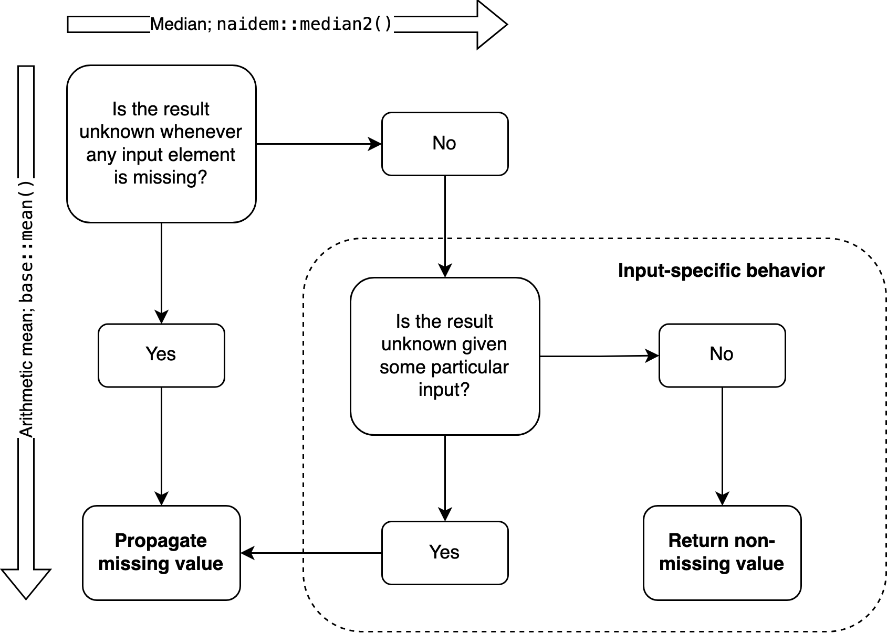

NA | TRUE[1] TRUENA & FALSE[1] FALSEIf you work with data, you most likely have to deal with missing values. You may have read that NA infects everything it touches — all operations that take data with any NA elements will output NA in turn.
In R, your first reflex might be to keep those missings from ruining your analysis using na.rm = TRUE. If that won’t do, you may even employ sophisticated imputation techniques to simulate a state where the missing values are, in fact, known.
I believe we should think differently about missing values — at least in some cases. First of all, it’s not true that NA propagates through all operations. Here are some counterexamples:
Equivalently:
Fine, you may think, these are logical values. Special rules apply here, and this won’t work with numbers. But there is at least one case where it does:
Other cases very nearly have the same logic. NA * 0 would be 0 if not for the possibility that NA hides an infinite number, because Inf * 0 returns NaN. Also, NA / 0 only is NA because while, e.g., 2 / 0 is Inf, 0 / 0 is NaN. If not for special values other than NA itself, these operations would return actual known numbers when taking NA as an input.
I admit that these are corner cases. They don’t allow us to find, for example, the mean of a distribution where some values are missing. Importantly, however, this is just because the mean takes every single value into account. It’s not a general issue with numeric operations!
The median is robust, or impervious to outliers. This statistical resilience means that some distributions have a known median even if some of their values are missing. A vector like c(1, NA, 1) has a known median, 1 — no matter what the NA stands for. If NA is less than 1, the true underlying distribution is sorted like c(NA, 1, 1), and if it’s greater, the order is c(1, 1, NA).
In both cases, the central value is 1, so the median is just as certain as in c(0, 1, 1) or c(1, 1, 2). This logic generalizes to more complex cases, as we will see shortly. But median() won’t tell you about any of this:
Base R contains many inconsistencies, and this is one of them. median() is conceptually at odds with the logical operators we saw above. It fails to implement three-valued logic correctly: if NA | TRUE correctly returns TRUE, median(c(1, NA, 1)) should return 1. Returning NA instead amounts to the assertion that the median is unknown. But it’s not — it can be determined by a median algorithm that deals with missing values correctly. I couldn’t find such an algorithm in the literature, so I wrote one myself and implemented it in the naidem package.
naidem::median2() generalizes the intuition from the simple case of c(1, NA, 1). It is guaranteed to return the median if and only if the median can be determined. Whenever that’s not possible, the function returns a correct and meaningful NA.
[1] 1[1] NA[1] 7[1] NAThe result is NA in two of these cases because the median really is unknown there. For c(1, NA, 2), the true distribution might be c(-4, 1, 2) or c(1, 2, 2) or c(1, 2, 50) — there is no way to know. Since the central value depends on the missing value, the median cannot be determined. In general, the greater the proportion of missing values and the more heterogeneous the known values, the more likely it becomes that the median is unknown due to missing values, all else being equal.
Yet it’s not the same as the mean. We don’t know the median, but we can use naidem to determine its minimum and maximum values. Depending on the position of NA, it’s either 1 or 2:
A more complex example, this time with an even number of values:
If both NAs represent numbers at the vector’s minimum, the true distribution is sorted like c(NA, NA, 2, 4, 5, 7). The median is the mean of 2 and 4, that is, 3. If both unknown values are at the maximum, the order is c(2, 4, 5, 7, NA, NA), so 5 and 7 are the central values. The median depends on the position of the missing values within the sorted vector, so we don’t know its true value — missingness is propagated here. But at least we know the median’s range.
Some vectors have such a high share of NAs that the median can’t be confined to a specific range. Even median_bounds() will return missing values, so we need a new trick.
The new solution, median_table(), first attempts to find a non-NA median. If it can’t, it ignores one missing value and tries again. If the result is still unknown, it will ignore one more NA; and so on until an estimate is found:
# A tibble: 1 × 10
term estimate certainty lower upper na_ignored na_total rate_ignored_na
<chr> <dbl> <lgl> <dbl> <dbl> <int> <int> <dbl>
1 "" 7 FALSE NA NA 3 4 0.75
# ℹ 2 more variables: sum_total <int>, rate_ignored_sum <dbl>This strategy is similar to na.rm = TRUE, and always yields the same estimate. However, it is more careful: it only ignores as many NAs as absolutely necessary, so it gives us a sense of how close we are to knowing the true median of the distribution. Here, we had to ignore three out of four NAs, so the median is far from known. On the most basic level, the certainty column says whether the median is known, or whether any NAs needed to be ignored.
A core tenet of dealing with missing values in R says that NA will “propagate conceptually”. This means that a function returns NA because the value that it’s meant to compute cannot be determined from the input due to missing values. Often, a single NA will make the result unknown. An example is mean() which correctly returns NA whenever the input contains any NA: since every single value factors into the mean, the result is unknown if even a single input value is. min() and max() work the same way. (I ignore na.rm = TRUE here because it is just a pragmatic decision. It doesn’t follow the logic of any particular algorithm.)
However, we have now seen a few exceptions. There are functions that sometimes return non-NA values even if their input contains missing elements. This seems just as correct as mean() always returning NA in this case. The basic reasoning is always the same: can the function answer the user’s question given some particular input? With mean(), that’s never possible. For some other functions, it depends on the input.
Conceptual propagation doesn’t mean that each function returns NA whenever the input contains a missing value. Whether it should propagate NA depends on two parameters: (1) the function itself, and (2) certain other aspects of the input. Which aspects these are will, in turn, depend on the function. For example, any() won’t care about NA elements but return TRUE if any other elements are TRUE. all() is precisely the reverse, looking for FALSE and returning it when found, despite any NAs there might be.
Because of these two parameters, conceptual propagation is inherently conditional propagation. Always responding to NA with another NA is only correct for some algorithms, like the arithmetic mean. If a function behaves this way but the answer to its question actually depends on further details about the input, as with median(), it seems fair to say that its implementation is not entirely correct. This is why I saw the need for an alternative that threads the needle more carefully, like naidem::median2().
However, the median seems to be an exception. My sense is that most base R functions handle missing values correctly. The situation is different for modes, which are not implemented in base R. (The mode() function has a very different use case.) There is a package for NA-correct mode estimation, called moder. I wrote it because existing community solutions didn’t handle NA correctly, as explained in moder’s docs. This might seem pedantic, but functions that return NA imply that the result is unknown, and I think we should take this seriously.
To drive the point home, here is a protest sign:
When writing functions that may return NA, we should apply domain-specific logic to determine the precise conditions where it’s appropriate. What makes the data unfit to answer the function’s question? For many functions, this will be a single NA. Yet we can only know this by considering the specifics of the algorithm at hand. The median is different from the mean in this respect, and so is the mode.
The details of this can be complex. But we need to face this complexity head-on to keep the semantics of NA consistent, and to justify the assertions that we imply when our functions return missing — or known — values.
This flowchart encapsulates the agenda for designing algorithms that deal with missing values correctly:

The picture changes if we assume some context about the missing values. Imputation methods are the typical form of this, but a particularly interesting example is a recent variation on Kendall’s tau by Robert Flight and others. This algorithm derives information from missing values under certain domain-specific assumptions. It is similar in spirit to Codd’s four-valued logic which differentiates between missing values based on whether they are “applicable” or not: does their missingness have any substantive implications for the question at hand or can they safely be ignored?
If the assumptions of these more demanding models are met, we know a little more about NAs than just their count and their individual positions in the data. This can translate into higher information value for certain operations, but relying on such knowledge narrows the scope of the techniques.
Codd’s system also differs from all the above because it cares about the specifics of individual missing values. Every single missing value is encoded as either applicable or inapplicable. This is quite foreign to R, which only uses the more generic NA placeholder. The R functions I discussed before don’t rely on any specific assumptions beyond the idea that certain values are unknown. This is why they are less demanding and more general tools.
Note that the positions of missing values within the distribution are prima facie irrelevant because taking them into account would require domain-specific assumptions about how to interpret them. Apart from the number of missing values, there is no information about NAs that can readily be used — that is, without incurring such assumptions.